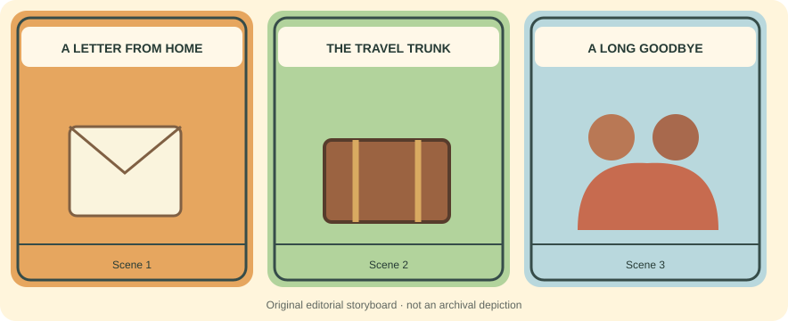

Punjab → Pacific Northwest
Across the Ocean, Into a New Home
Five chapters. One remarkable journey. Read the story, try an activity, and collect a passport stamp.
🧣 Grandfather's corner
“Aa gaye oye!” Come closer, beta. Let's explore the journeys of Punjabi people who made new homes across the sea. These are stories drawn from history, not memories I personally witnessed.
Explore and remember
You can always keep reading, even if you skip this activity.
Your travel passport
Finish all five chapters to collect your stamp. Progress stays in this browser only.
Where this history comes from
These institutional sources support key events in the story. Other chapter details are still undergoing historical review.
Listen in Punjabi
Grandfather-style Punjabi narration is planned, but no reviewed recording is available yet. This pilot does not pretend that an audio file exists.